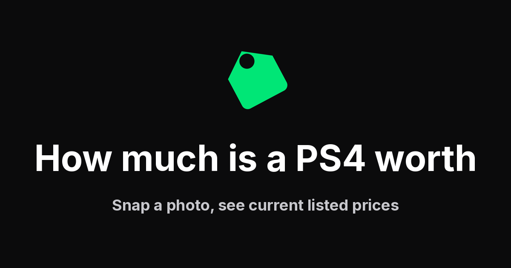

People often look up how much is a ps4 worth after a console comes out of a cupboard, or after an upgrade to a newer system, and then treat every used PS4 as if it were the same machine. The first instinct is to copy a single going rate, or a trade-in rumour, onto whatever box happens to be on the desk. That is how an original console gets talked about as if it were a PS4 Pro, how a console-only listing gets priced like a complete-in-box bundle, and how a machine with a damaged HDMI port or a dead drive gets listed as if it were a working console.
If you want a useful how much is a ps4 worth, check yours by photo. Start with the console in front of you, confirm whether it is a standard, Slim, or Pro model, and look at a current listed range for that model and condition. That is what  How Much Is It Worth: Scanner is built to do.
How Much Is It Worth: Scanner is built to do.
Sony's PlayStation 4 family includes the original console, the slimmer revision usually called the PS4 Slim, and the PS4 Pro. They do not share one used price. The model number, often a CUH code on the back or bottom label, is the detail that settles which one you have. Photograph the front, the label, and the ports. Storage size also varies, including 500 GB and 1 TB configurations, and some people have upgraded the drive. Say what the label and the system menu show, rather than guessing from the shape alone.
A console that turns on, holds a picture, and reads discs is worth more than one that does not. Be honest if it overheats, has a noisy fan, a damaged HDMI port, or a dead drive. Completeness moves the number too: how many DualShock 4 pads you include, whether those pads are genuine and working, whether a camera, charging stand, or games come with it, and whether you still have the original box and power cable. Firmware and account status matter for the buyer. A console that is all-original, signed out, and ready to set up is easier to sell than one with a banned account or a missing power brick. Region is usually less dramatic on PS4 than on some older systems, but chargers and bundled games can still differ by market.
Take or upload up to three photos. The app shows the identification first. If the model, the storage, or the bundle looks off, you correct it before any price lookup. Then you see a Worth about figure, the listed range around it, a confidence level, and the live listings behind the number when there are enough of them. If the data is thin, the result is labelled as a rough estimate. The product will not invent a precise figure, and it is not a certified appraisal, an insurance valuation, or an offer to buy. A photo is a first look, not a workshop inspection.
Want to try it? Start your free 3-day trial in the iPhone app at https://apps.apple.com/app/id6832980231. 3 free scans + 3-day unlimited trial. You can also scan it online free at https://howmuchisitworth.today/how-much-is-a-ps4-worth. On Android? Check https://howmuchisitworth.today/ for the Android release.
Trade-in desks, including well-known game shops, will often quote a lower number than a private sale of the same working console, because they need a margin to resell it. That can still be a fair choice if you want cash today and no listing hassle. A private sale on a marketplace is usually where people look for a higher figure, and it takes more work.
The range we show comes from current public listings, which are asking prices. A sold price can be lower, especially if a listing has sat or the console has a fault the photos hid. We will not invent a single going rate for "a used PS4" as if every machine were the same. A console-only listing and a bundle with two pads, a game, and a box should not share one number. Extra games help only if people still want those titles. Do not use a complete-in-box asking price for a loose, scuffed console.
If you decide to sell, you can copy a ready-made listing, with Quick sale, Fair price, or Top dollar, and save the scan to a collection. A private listing on eBay, Facebook Marketplace, or Gumtree is the usual route for a working console. A game shop trade-in is faster and usually lower. Local pickup can be simpler than shipping a console. These are practical first looks, not formal appraisals. Prices people see may be in US dollars or in local currency depending on the market you search. Describe faults honestly, and say how many genuine pads you are including.
Viral "this is what a used PS4 goes for" posts often mix original, Slim, and Pro consoles, or skip storage, pads, and faults. We will not invent a single going rate. Compare current public listings for the model you have, or a trade-in quote if you want a faster, usually lower, number.
The app is free to start. Start your free 3-day trial. 3 free scans + 3-day unlimited trial.
If you are trying to find how much is a ps4 worth, check yours by photo. Download the app and scan your first console free, or start at https://howmuchisitworth.today/how-much-is-a-ps4-worth.
PlayStation and PS4 are trademarks of Sony Interactive Entertainment. This guide and the How Much Is It Worth app are not affiliated with Sony.